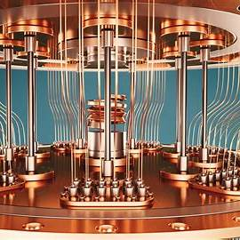

Exemple d'ordinateur quantique

.jpg)
.jpg)
.jpg)
Pasqal est une jeune pousse française, fondée en mars 2019, spécialisée dans l'informatique quantique. Elle travaille sur la mise au point d'un ordinateur quantique à atomes neutres, une technologie innovante qui pourrait révolutionner le secteur...
En savoir plusSherbrooke, au Québec, est devenue un centre mondial de la technologie quantique, grâce à des initiatives comme la Zone d’innovation quantique. Cette région attire des start-ups françaises telles que Quandela et Pasqal...
Lire l'articleGoogle a dévoilé Willow, une puce quantique capable de résoudre en cinq minutes des tâches qui prendraient des milliards d'années à un superordinateur classique...
Découvrir Willow
Le monde de l'informatique quantique connaît des progrès rapides. Découvrez les dernières innovations qui bouleversent l'industrie...
Lire l'article
Les algorithmes quantiques jouent un rôle clé dans l'intelligence artificielle et l'avenir de l'informatique. Découvrez comment ils peuvent transformer des secteurs entiers...
En savoir plus
L'informatique quantique pourrait bouleverser la sécurité des systèmes informatiques actuels. Découvrez les implications pour la cryptographie...
Lire l'article
Les chercheurs améliorent constamment les dispositifs matériels utilisés dans l'informatique quantique. Ces progrès ouvrent la voie à des applications révolutionnaires...
En savoir plus
Découvrez comment l'informatique quantique pourrait transformer la médecine en améliorant la modélisation des protéines et la découverte de médicaments...
Lire l'article
Bien que l'informatique quantique fasse des progrès, elle fait face à plusieurs défis techniques majeurs, notamment le contrôle des qubits et la correction d'erreurs...
En savoir plus
La combinaison de l'informatique quantique et du machine learning pourrait offrir des solutions d'une puissance sans précédent dans le traitement des données...
Lire l'article
L'informatique quantique commence à trouver des applications dans le secteur privé, de la finance à la logistique en passant par les nouvelles technologies...
En savoir plus
Un nombre croissant de startups se lancent dans l'informatique quantique, cherchant à révolutionner des secteurs allant de la cryptographie à la science des matériaux...
Lire l'article
Les technologies quantiques pourraient jouer un rôle clé dans l'optimisation des systèmes énergétiques, du stockage à la production d'énergie renouvelable...
En savoir plus
La course à l'informatique quantique se joue à l'échelle mondiale. Découvrez les efforts des principaux pays et entreprises pour dominer cette technologie révolutionnaire...
Lire l'article